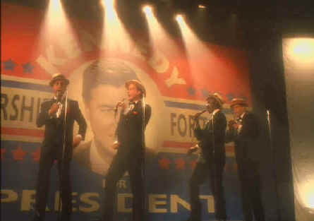

HBO/1998/120m/FS 1.33
 |
The pack stumps for Kennedy©HBO |
Casting choices are the chief virtues and
failures of The Rat Pack. Ray Liotta plays Sinatra with fair intensity, but he
looks uncomfortable in the skin of a man who defined the ultimate cool for a generation of
would-be swingers. Liotta fails to find any charm in Sinatra the man. The question this
film might have answered is why these men were drawn to Sinatra as they were, and again,
Liotta is not able to give us a clue, whether from script or character interpretation.
Probably the best of the impersonations is by Joe Mantegna playing Dean Martin. Mantegna
sips apple juice pretending its scotch, drinks milk in front of the television while other
rat-packers are bedding down beautiful woman, and finds the perfect stage mannerisms for
Dino in the performance sequences. Bravo Joe! Don Cheadle continues to show audiences
incredible range. Cheadle makes a credible Sammy Davis. He dances, swings, and with fine
make-up, even looks a lot like the likable singer/dancer. In the important role of Peter
Lawford, Angus falls far short with an inconsistent and unconvincing accent.
Lawford’s weakling is a tough role, but at least MaFadyen gets one great line "I
just want to act—and cheat on my wife." And in the role of John F. Kennedy,
William Petersen does nothing to suggest the incredible charisma of the former late
President.
Made to premiere on HBO, The Rat Pack has reasonable
production values. Director Rob Cohen sets the scenes well and captures some of the
glitter of Vegas. Maybe there’s a shot too many of the Sands marquee, but Cohen wants
to remind up of the venue and the names. Cohen tries hard to give the biopic some infusion
of energy but pumped up music between cuts adds little. Cohen is working with a major
obstacle in his path. None of the singing is by the original artists and this definitely
drops The Rat Pack down more than a peg or two. Cohen also makes one huge mistake
by drifting off into a Sammy Davis fantasy number when protesters of his pending marriage
to Britt picket his Washington appearance.
The DVD is composed for 1.33 in sharp images. The lighting falls
short on the performance scenes pushing the bright white of shirts into blue blooming.
Otherwise color is stable and contrast ratio adequate. The Dolby Digital 2-Channel
surround is cleanly recorded, and the songs sound okay, but they ain’t Sinatra.